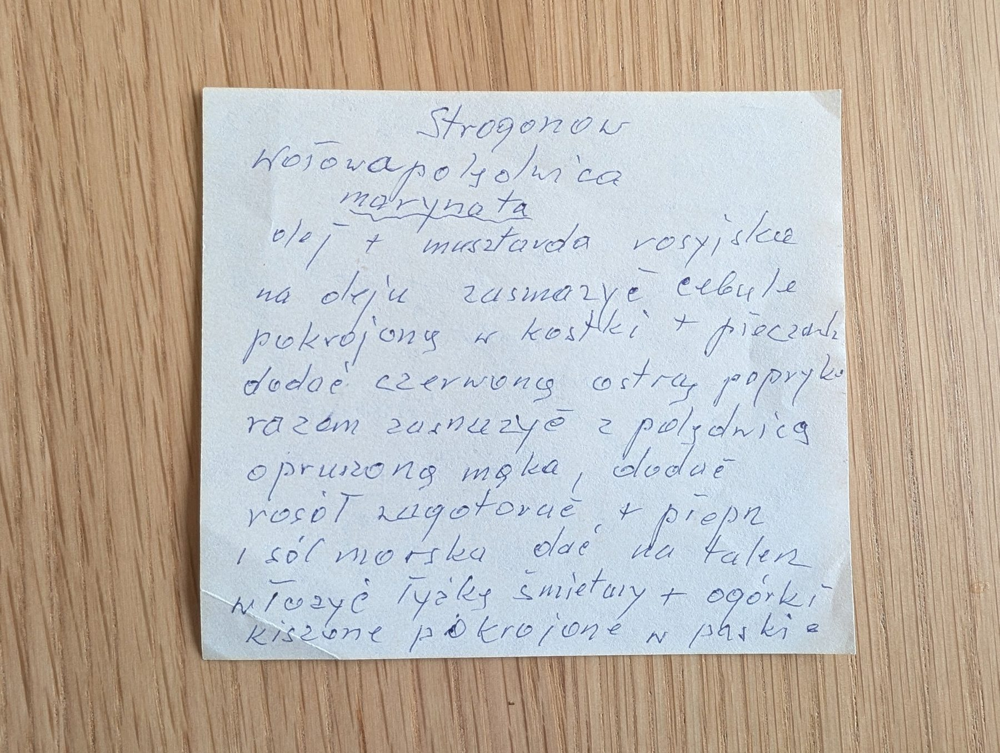

Strogonow

Składniki
- polędwica wołowa
- olej
- musztarda rosyjska
- cebula
- pieczarki
- czerwona ostra papryka
- mąka
- rosół
- pieprz, sól morska
- śmietana
- ogórki kiszone
Przygotowanie
- Polędwicę zamarynować w oleju z musztardą rosyjską.
- Na oleju zasmażyć cebulę pokrojoną w kostkę i pieczarki, dodać ostrą paprykę.
- Dodać polędwicę oprószoną mąką i razem zasmażyć.
- Dodać rosół, zagotować, doprawić pieprzem i solą morską.
- Na talerzu podać z łyżką śmietany i ogórkami kiszonymi pokrojonymi w paski.
Oryginalny zapis
Strogonow wołowa polędwica marynata olej + musztarda rosyjska na oleju zasmażyć cebulę pokrojoną w kostki + pieczarki dodać czerwoną ostrą paprykę razem zasmażyć z polędwicą oprószoną mąką, dodać rosół zagotować + pieprz i sól morska dać na talerz włożyć łyżkę śmietany + ogórki kiszone pokrojone w paski.